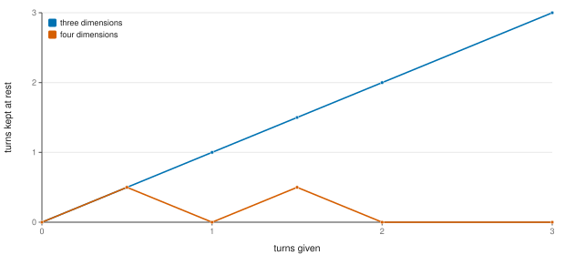
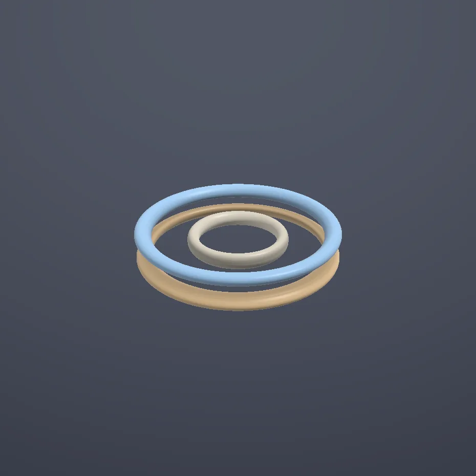
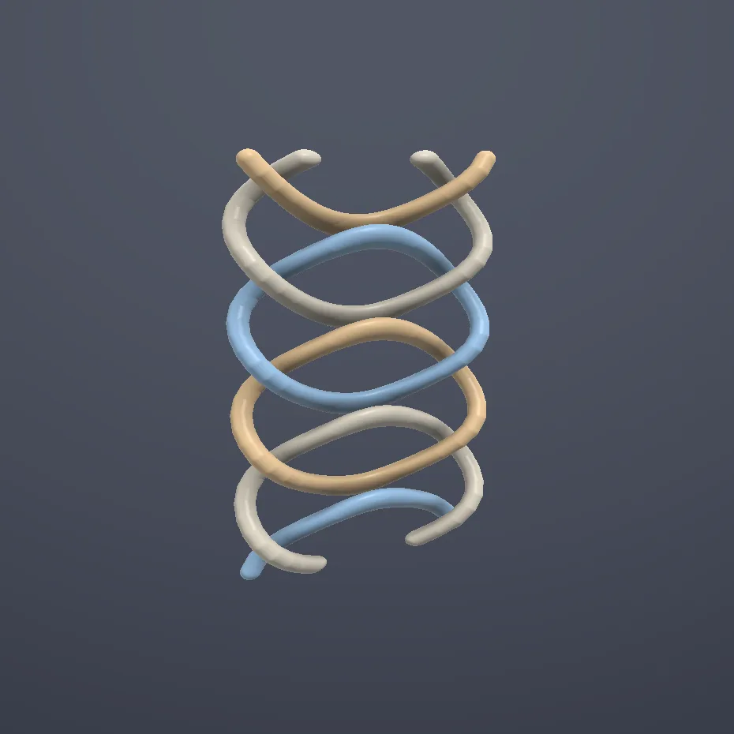

Rope after the knot: what holds in four dimensions
A knotted loop comes undone in four dimensions, and it is often taken to follow that a four-dimensional world could have no rope, no knots and no cloth. We argue that this overstates the loss. What four dimensions removes is narrow: one thread can no longer catch on another. Each thing a rope does in our world (holding twist, gripping its own fibres, braiding, being made fast) fails for thread against thread and returns when one of the two parts is a surface. We build each case as geometry in a solid-modelling kernel written for four dimensions, test twist in a frictionless bead-chain simulation run identically in three dimensions and in four, and compare the resulting ropes per weight in one tensile model. Three results. A twisted bundle of threads sheds every whole turn in four dimensions. Confined between a core and a sheath, the same bundle keeps exactly one turn and sheds two, as the topology of braids on a sphere requires. And a rope of continuous filaments in a thin closed hose is worth 1.1 to 1.7 times the same filaments loose, per weight, over every rope length and fibre scatter we tried; whether it also beats a single strand depends on both. The topology is known and cited. The mechanics and the comparison are the contribution.
1. Introduction
Two things in four dimensions can obstruct each other only if their dimensions add to at least three (general position; F1). A thread is one-dimensional, so two threads add to two and pass through where each other would be. A thread and a surface add to three and catch. So a ring falls off a ring and stays on a sphere, and chains, cloth and bearings have been drawn and simulated on that basis before (G1, G2, G3). The same sources and an older forum discussion state the consequence for textiles: what weaves and what knots in n dimensions has n − 2 dimensions, so in four it is a sheet or a tube, not a thread (G3, G6, G7).
Cordage in our world is thread against thread at every scale. Twist holds short fibres in a yarn because each is wound round the others and pressed on them by its own tension (B5, G4, G5). A knot holds because a strand cannot pass through a strand. A braid is strands that cannot pass. All three are the same fact, and all three go in four dimensions. The usual conclusion is that rope goes with them.
This paper asks the engineering question instead: what is the least change that brings each function back, and what is the resulting rope worth? The answer in every case is one surface. The paper's order is: methods (section 2); twist, fastening and braiding (section 3); strength per weight (section 4); validation and sensitivity (section 5).
Two words are used strictly. A hose is a closed skin round a whole bundle; its cross-section is a sphere. A tube is a single hollow strand; its cross-section is a ring. They behave differently: tubes braid and knot, and a hose does neither.
 cross-section at w = 0
cross-section at w = 0 cross-section at w = 0.9
cross-section at w = 0.9 side view at z = 0 (w up)
side view at z = 0 (w up) side view at z = 0.35
side view at z = 0.35 cross-section at w = 0
cross-section at w = 0 cross-section at w = 0.5
cross-section at w = 0.5 side view at z = 0 (w up)
side view at z = 0 (w up) side view at z = 0.3
side view at z = 0.32. Methods
Three instruments, each with its own test file. Every number below that comes from a computation is filled into this text from the data file by the build, and a test fails if the two part.
2.1 Geometric tests in the CAD⁴ kernel
CAD⁴ is a solid-modelling kernel for four dimensions, written for this work. A part is a tree of operations that compiles to a distance function. Two parts interfere if a sampled grid finds a point inside both (12 to 20 samples an axis over the overlap of their bounding boxes, with cells proved empty by the distance bound skipped).
Two kinds of test are used, and the results say which. A sweep translates one part rigidly along a named path in small steps and records whether it interferes at any step. A push displaces one part once, by 0.3 (several times the gap to its neighbours), along an axis and records whether it then interferes. Sweeps were used for the bundles in a hoop, a ring and a hose, the plaits, the knot and the Borromean link; pushes for the tube yarn, the maypole and ribbons on a tube, along x, y and z only.
Either test can show that a way out exists. Neither can prove that none does: they try rigid translations along axes and a few named paths. Where we say a link or knot holds, that rests on a cited theorem; where there is no theorem we say only what was pushed and what it ran into. Constructions made by revolving a three-dimensional curve (the tube plait, the tube knot, the tube yarn) are the spun surface of that curve (E8).
2.2 Bead-chain simulation of twisted yarn
Fibres are chains of 33 beads on springs (stiffness 3000) with a repelling contact (stiffness 6000) between beads of different fibres nearer than two radii (radius 0.1; length 4). Seven fibres, six round one, are laid as helices of a given number of turns, the ends clamped, the yarn stretched 3%, every free bead displaced at random by 0.002, and the system relaxed by damped dynamics (step 0.006, damping 0.985 a step) for 30 000 steps. The same code runs with three coordinates or with four; the only difference is one more direction for a bead to move in.
Measured at rest: the elastic energy; the contact force on the core and on one outer fibre, per length; that fibre's tension. Variants: the core replaced by a rigid ribbon of a given half-width; and thirteen fibres (one and the twelve that fit round it) inside a wall that no bead's centre may pass, which stands for a hose. The hosed runs are 40 000 steps; one set is annealed (six random kicks of falling size, each followed by a relaxation).
There is no friction and no bending stiffness. So this instrument answers a narrower question than "does a 4D yarn hold": it shows whether twist is held by geometry alone. Each case is one bundle size. Relaxation finds a rest state, not necessarily the lowest.
2.3 Tensile model
 (a) The model
(a) The model (b) One pull of four ropes: force at the jaw against stretch
(b) One pull of four ropes: force at the jaw against stretchA rope is 96 sections long. Each fibre's place is a track of unit links: one continuous filament, or short fibres 40 links long laid end to end from a random phase. Links share one stiffness and each has its own strength, Weibull with modulus 5 (A2). Neighbouring tracks are joined at each section by a frictional interface, elastic (stiffness a quarter of a link's) until its shear reaches 0.3 times the press between them, then slipping at that force. Both ends are in jaws. This is the chain-of-bundles picture with frictional load transfer (A1–A7).
The rope is stretched in 110 steps to 4.5% (7% in the braid and sensitivity runs). At each step the equilibrium is the minimum of a convex incremental energy: with the friction limits and the slips so far held fixed for the step, a stick-then-slip interface has a potential. It is found by Newton's method with a banded Cholesky solve and a line search. Then any link over its strength is removed, worst first, and the equilibrium is found again. A solve counts only if its final step is under 10⁻⁹ of the stretch; runs that fail are reported and excluded. The independent review reimplemented the solve with a different minimiser and agreed with it to eleven figures on thirteen small ropes.
Each rope is pulled 200 times (60 or 40 in the sweeps, as each figure says) with different random strengths and phases. We report the mean, the spread and the 5th percentile. Strength is in strands: one continuous strand's mean at the same length and scatter is 1. Weight is in strands, counting every sheath, hose, jacket and the extra length of a strand laid at an angle.
What differs between ropes is who touches whom, and the press:
| rope | who touches whom | the press between neighbours |
|---|---|---|
| loose bundle | 13: one and the twelve round it (D4) | none |
| twisted yarn | 7: one and six | q × (their mean tension + a laying tension), q measured in 2.2 |
| yarn on a ribbon | six fibres, each touching only the ribbon | the same law, q measured with a ribbon core |
| hoops | 13 | constant: a third of the skin's force on a fibre |
| hose | 13, and a fourteenth track, the hose, touching the outer twelve and carrying load | fibre to fibre a third of the skin's force; hose to fibre all of it |
| braid of strands | 3, or a core and 6; a strand at θ has stiffness cos³θ, strength cosθ, weight 1/cosθ | tan²θ × tension (B5, C2) |
| cable | 13 elements with the level below's measured strength distribution, stiffness and weight | as hoops |
The skin's force on a fibre comes from treating a hose τ thick as a thin pressure vessel (D1) stressed to half its strength. The hose's own track is given a stiffness and a strength equal to its weight, with a fibre's scatter.
The model has free choices, and section 5 varies each: the hose's stress and the friction coefficient (which enter only as a product, so they are one dial); the laying tension of a yarn or braid; the rope's length; the fibres' scatter; and how much load the hose is allowed to carry.
The bench does not know a tube from a thread. Its braid rows are braids of plain strands; the geometry of section 3.3 decides only which braids can exist.
2.4 Sheath pressure: three estimates
(a) The vessel formula. (b) A net of springs on an icosphere of up to 10 242 nodes, shrunk onto twelve rigid balls in their packed places and relaxed with the nodes kept outside the balls; the force on each ball is read against the net's mean tension. The same method on a band round six discs must give exactly one tension per disc, and does. (c) The same force from the convex hull's area and mean curvature (Steiner's formula; D3) and the virial of a closed film. Separately, how that force is shared: thirteen balls with one-sided linear contacts and diameters drawn at random, 200 packings a setting (D5).
3. Results: twist, fastening and braiding
3.1 Twist

(a) Seven free fibres: turns kept at rest against turns given (b) Thirteen fibres between a core and a wall: rest energy against whole turns given
(b) Thirteen fibres between a core and a wall: rest energy against whole turns givenThread yarn. In three dimensions the turns stay and the fibres press on the core. In four every whole turn leaves through the spare direction, the pressure goes to zero and the energy returns to the untwisted value (4.7 against 4.7). A half turn stays in both worlds: it cannot be undone with the ends clamped. With no jiggle the 4D twist stands, so it is an equilibrium, and an unstable one. This is a frictionless result: it shows that nothing geometric holds the twist. A real yarn has friction, which can hold an unstable state against small disturbances, so the claim is that a 4D thread yarn has no geometric grip, not that it must fall apart.
Ribbon core. A ribbon core holds the twist if the ribbon is wide enough that a fibre cannot slip round its edge: the threshold lies between half-widths of 0.1 and 0.2, one to two fibre radii.
Bundle between a core and a hose: one turn is kept, two are shed. Thirteen fibres inside a wall were given whole numbers of turns, 3 seeds each. With the wall where the fibres just touch, every even twist came to rest at the untwisted energy (19.3) and every odd twist at 45.4. With the wall loose, so that nothing is squeezed, the same: 8.8 for even and 33.9 to 34.5 for odd. With no wall at all the thirteen shed everything (8.8 whatever they are given).
A second test gives quarter turns, which put the top end back on the packing's own sites, and anneals. If twist is kept modulo two turns, the rest energy should repeat every two turns and be the same at t and 2 − t; free fibres' ends differ only modulo one turn. The lowest rest energies over 3 seeds, at 0, ¼, ½, ¾, 1, 1¼, 1½, 1¾ and 2 turns: 52, 53, 61, 64, 77, 64, 57, 53, 52; at 3 and 4 turns, 77 and 56. The free fibres repeat every single turn, 8.8 at each whole turn and 13.6 to 14.7 at each half. (This test used a wall tight enough to compress the bundle, where runs sometimes jam above the lowest state: whole turns there rest at 52 to 63 when even and 77 to 90 when odd. An earlier draft reported that overlap without the looser walls, and understated the result.)
The reason is known mathematics. The twelve outer fibres are confined to a shell between the core and the wall, so in each cross-section they are twelve points on a sphere, and their paths along the rope are a braid on the sphere. In the braid group of the sphere the full twist has order two (H3). Equivalently, a framed curve in four dimensions has two framings, not a whole number of them, because the rotations of three-dimensional space have a single non-trivial loop (H1, H2, F6): the belt trick. In three dimensions the corresponding count is a whole number, and a clamped elastic rod there already has exactly these two classes once it is allowed to pass round its own ends (H4). We did not find the consequence for a twisted bundle in four dimensions stated anywhere.
So a hose does not give a four-dimensional rope twist to grip with: at most one turn in its whole length. This was shown for one shell of twelve. Bundles of several layers are untested.
Tube fibres. Hollow tubes as the threads of four-dimensional textiles are proposed in G1. Revolve an ordinary twisted yarn and each fibre becomes a tube. In the kernel an outer tube pushed 0.3 along any of the four axes runs into the others. That is all that was tested: no mechanical simulation has tubes in it.
3.2 Fastening
Knots in thread. A thread cannot be knotted (F1, F2). We show it directly: one strand of a trefoil is lifted into the spare direction, carried through the place where the other strand is, and set down, with nothing touching along the whole path; the crossing has changed and the trefoil is a plain loop. Pushed through without the lift, the strands collide.
Knots in tubes. A tube can be knotted. The same trefoil revolved is the spun torus of the knot, and its complement has the trefoil's group (E5, E8). In the kernel the strand that passed freely as a thread is stopped.
A sphere round a post. In the kernel a bundle of rods inside a sphere-hoop cannot leave it sideways, where the same rods in a ring can (figure 1). So a sphere round a post is the four-dimensional counterpart of a ring on a rod: it cannot come off sideways and is free to slide along. That is the geometric core of a hitch. We did not model a line attached to it, or what stops it sliding. A ring through a sphere is a link of a chain (G1).
Borromean links. They exist in one mixture. Two spheres and a ring (F3): with both spheres the ring is stopped along every axis, and with either sphere taken away it slides clear. Three rings cannot do it.
3.3 Braids and cloth

cross-section at w = 0 cross-section at w = 0.5
cross-section at w = 0.5 side view at z = 0 (w up)
side view at z = 0 (w up)
side view at z = 0.7 cross-section at w = 0
cross-section at w = 0 cross-section at w = 0.5
cross-section at w = 0.5 side view at z = 0 (w up)
side view at z = 0 (w up) side view at z = 0.3
side view at z = 0.3Threads and ribbons. Threads do not braid, and neither do flat ribbons. A ribbon has edges, and in the kernel one ribbon of a plait is swept along its own width past the others and lifted away, touching nothing.
Tubes. Tubes braid. Draw any braid in a half-space and revolve it: every strand is a tube and every crossing is one tube passing through another. The mathematics is the loop braid group, into which the ordinary braid group embeds (E1, E6). In the kernel one tube of a three-tube plait, swept along any of the four axes, runs into the other two.
Braid on a core. Six tubes braided round a seventh (a maypole): each of the six, and the core, pushed 0.3 along x, y or z runs into the rest. By the same counting that lets a ring of rods fall out of a ring, a ring of tubes round a thread core should leave the core free along the ring's axis; that case was not built.
Ribbons on a tube. Six ribbons wound on a tube: each pushed 0.3 along x, y or z runs into the tube, and one slides round the tube past its neighbours' edges touching nothing. So the ribbons are held by the tube, as far as pushes show, and are not held by each other.
Cloth. Cloth is threads woven with ribbons, or sheets with sheets, which is published (G3, G6).
4. Results: strength per weight

At the model's reference setting (96 sections, Weibull modulus 5), per weight:
| rope | per weight | note |
|---|---|---|
| twisted yarn of short threads, 4D | 0.00 | given no grip: section 3.1 |
| the same in 3D, hard twist | 0.64 | for comparison; no penalty taken for the fibres' angle |
| yarn on a ribbon, hard twist | 0.54 | the ribbon alone is 1.00; no angle penalty |
| thirteen filaments, loose | 0.70 | spread 11%, against a strand's 24% |
| filaments in hoops (best thickness) | 0.86 | |
| short fibres in hoops | 0.70 | |
| filaments in a hose (best thickness) | 1.13 | see the next table |
| short fibres in a hose | 1.06 | |
| a hose that contracts more than its fibres | 1.15 to 1.25 | Poisson difference 0.2, and 1 |
| seven strands, loose | 0.73 | spread 15% |
| a core and six strands braided at 20° | 0.76 | spread 11% |
| plait of three strands | 0.77 | |
| six strands wound on a core, no grip on each other | 0.71 | |
| rope, cable, great cable (thirteen of each, hooped) | 0.84, 0.73, 0.63 |
That table is one setting. The comparison with a single strand depends on two things the reference setting fixes, because a strand is a weakest-link chain: the longer it is and the more its strength scatters, the weaker it is, while a rope confines each break to a short stretch. Thirteen filaments, 40 pulls, each setting with its own reference strand:
| rope length (sections), Weibull modulus | loose | hoops | hose | hose ÷ loose |
|---|---|---|---|---|
| 24, modulus 5 | 0.69 | 0.70 | 0.96 | 1.39 |
| 48, modulus 5 | 0.69 | 0.78 | 1.02 | 1.46 |
| 96, modulus 5 (the reference) | 0.70 | 0.86 | 1.11 | 1.58 |
| 192, modulus 5 | 0.72 | 0.99 | 1.26 | 1.74 |
| 96, modulus 10 | 0.80 | 0.76 | 0.97 | 1.22 |
| 96, modulus 20 | 0.88 | 0.76 | 0.95 | 1.08 |
- Hose. Filaments in a hose are worth more per weight than the same filaments loose at every setting, by a factor of 1.1 to 1.7. Against a single strand they range from 0.95 to 1.26: above 1 for long ropes of scattered fibre, below it for short ropes or uniform fibre. The advantage is load sharing round weak spots, and it shrinks as the fibre becomes uniform, because there are fewer weak spots to share round.
- Reliability. At the reference setting the hose rope's spread is 6% against a strand's 24%, and its 5th percentile is 0.98 per weight against a strand's 0.56. Most of what a rope buys is that it can be counted on.
- Hoops. Hoops grip and carry nothing. With uniform fibre they are worth less than the loose bundle: their weight costs more than their grip returns.
- Braids. A core and six braided strands read 0.76 against 0.73 for seven strands loose; the spread falls from 15% to 11%. The angle that grips is also the angle that costs.
- Cabling. Thirteen hooped ropes in a jacket, and thirteen of those, read lower per weight at each level (0.84, 0.73, 0.63). This was done with hooped ropes only, at the reference setting.
- Contracting hose. A hose with a larger Poisson ratio than its fibres tightens as the rope stretches. A difference of 0.2 adds little (1.13 to 1.15); a sheath built to contract reaches 1.25.
5. Validation and sensitivity
The hose as a load-bearing member. The hose's advantage over hoops comes mostly from carrying load. As built its track has strength equal to its weight. Alternatives, at the reference setting: with the size effect a piece of material that large would have, 1.06; with its axial strength reduced for carrying hoop stress as well (von Mises, 0.866), 1.07; with its axial strength halved, 0.99; gripping but carrying almost nothing, 0.92; against 1.13 as built. The order hose, hoops, loose survives all of them. A value above 1 does not.
Friction and hose stress. These enter only as a product. Halved and doubled, with the thickness re-tuned, the hose rope reads 1.06 and 1.22, and hoops 0.79 and 0.95. Doubling puts the hose at its full strength in hoop, so the upper figure is not attainable. The laying tension does not touch the hose; it moves yarn on a ribbon so much that that rope can be ordered and not quoted (supplement B5).
Sheath pressure. A taut skin lies on the outer fibres and runs straight between them. The net of springs and the hull calculation agree to three figures, and give 0.81 of the vessel formula's value. The same method gives the exact answer in three dimensions. The skin's tightest hundredth carries 2.3 times its mean tension, so a hose stressed to half its strength on average is at its limit in places.
Load sharing between contacts. An outer fibre shares the skin's force among five contacts, a third each when the fibres are equal. An earlier version of the bench applied the whole force at every contact; the repository records the correction. With fibre diameters drawn at random the total grip on an outer fibre barely moves and the grip on the middle fibre scatters widely.
Grip law. Against the bead yarn, tension times curvature is within 20% below 20° (worst ratio 0.81) and understates by a factor of 1.4 above, on four twists. The braids were run at the boundary.
Combined. Under the taut-skin force and the extremes of load sharing, at the reference setting, the hose rope reads 1.06 to 1.11.
Not modelled. Bending; fibre migration; a hose's bending stiffness; creep of a shrink fit; a biaxial strength criterion for the hose beyond the two cases above; bundles larger than thirteen; any mechanical difference between a tube and a thread. The tube yarn, the tube knot and the sphere round a post are geometry and cited theorems; none has been through a mechanical rig.
6. Discussion
The lesson is not that four dimensions is hospitable to rope. It is that the textbook fact was the wrong size. "A knot unties" is a statement about one curve. A rope is a made thing with parts of several shapes, and only the parts that are curves lose their hold on one another. Give the bundle a skin and the model says it is a rope. Make the strand a tube and geometry says it can be braided and knotted.
The twist result is the one we would single out. In our world a clamped bundle keeps any number of turns; in four dimensions a bundle that is held together keeps one, and a bundle that is not keeps none. The count comes straight from the topology of the cross-section, and the simulation shows it without being told.
The strength comparison is a model's, and its absolute numbers move with choices we could not fix. What it supports is an order (hose, then hoops, then loose) and a mechanism (a skin lets a broken filament carry load again), not a figure.
Contribution and prior work. Not the topology: the dimension rule, chains, sheet weaving, tubes as textile threads, the loop braid group, the spun torus, the Borromean link and the two framings of a curve in four dimensions are published and cited. Ours, as far as two prior-art passes could tell: the controlled three-against-four twist experiment and its ribbon variant; the observation that a confined bundle keeps exactly one turn; the kernel constructions and tests; the comparison of ropes on one bench with its weight accounting and its sensitivity; the taut-skin correction to the vessel formula; and the reframing. One forum (G6) was read only through search-engine summaries.
Contributions, data and code
Computation, code, analysis and drafting: Claude (Anthropic), working in sessions directed by the PI. Direction, judgement and the reframing in the title: minor mobius. A second Claude instance, given the repository and no account of how it was made, reviewed the solver, the data and the claims; its findings changed sections 2 to 5 and are recorded in the repository. That is a check, not an independent human audit, and none has been done.
Everything is in one repository, minormobius/agent01, under kata/: the kernel and parts (cad4/), the bead yarn (twist/), the bench and its studies (pull/), and this paper with its figure scripts (papers/r1/). The text's numbers are tokens filled from papers/r1/values.mjs, which reads the data files; a test fails if the built paper and the data part. The instruments run in a browser at kata.mino.mobi/cad4, /twist and /pull.
References
In each reference's tag: how far the citation, and then the claim relied on, was checked. The full list, with what each source is used for, is supplement C.
Supplement
- A. Rope drawings. Twelve ropes, four panels each, every panel live on a click: figures.html.
- B. Methods and results by chart. Each chart with its method and result: results.html.
- C. References with verification status: REFERENCES.md. D. Prior art: PRIOR-ART.md. E. The design space and the corrections made along the way: CONFIGURATIONS.md. F. The review and what was done about it: REVIEW.md.
Open items
- No independent human audit.
- Several references are confirmed to exist and were not read; supplement C says which.
- The kept turn was shown for one shell of twelve fibres. Larger bundles, and a source for the sphere braid group's full twist read in the original, are owed.
- No mechanical rig has tubes in it.
- The study data other than the 200-pull samples is not re-pulled by any test; a stale file would pass.
- The twisted-yarn rows take no penalty for the fibres' angle, where the braid rows do.
- The forum source G6 is known only from search summaries.